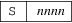
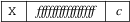

srec_fairchild - Fairchild Fairbug file format
The Fairchild Fairbug format has 8-byte records. A file begins with an address record and ends with an end-of-file record.
There are three record types in this file format.
Address records are of the form

indicating the address for the following data records.
Data records are of the form

Each data record begins with an X and always contains 8 data bytes. The ff characters are hexadecimal byte values (8 bytes). Each data byte is represented by 2 hexadecimal characters. The c character is a hex digit being the the nibble-sum of the data bytes. A 1-digit hexadecimal checksum follows the data in each data record. The checksum represents, in hexadecimal notation, the sum of the binary equivalents of the 16 digits in the record; the half carry from the fourth bit is ignored. The programmer ignores any character (except for address characters and the asterisk character, which terminates the data transfer) between a checksum and the start character of the next data record. This space can be used for comments.
The end-of-file record has the form
The last record consists of an asterisk only, which indicates the end of file.
Size
Multiplier
In general, binary data will expand in sized by
approximately 2.4 times when represented with this
format.
Here is an example Fairchild Fairbug file. It contains the data “Hello, World[rq] to be loaded at address 0x1000. Notice how the last record is padded with 0xFF bytes.
S1000
X48656C6C6F2C2057C
X6F726C64210AFFFF3
*
srec_cat
version 1.65
Copyright (C) 1998, 1999, 2000, 2001, 2002, 2003, 2004,
2005, 2006, 2007, 2008, 2009, 2010, 2011, 2012, 2013, 2014,
2018, 2019, 2022 Peter Miller
The srec_cat program comes with ABSOLUTELY NO WARRANTY; for details use the ’srec_cat -VERSion License’ command. This is free software and you are welcome to redistribute it under certain conditions; for details use the ’srec_cat -VERSion License’ command.